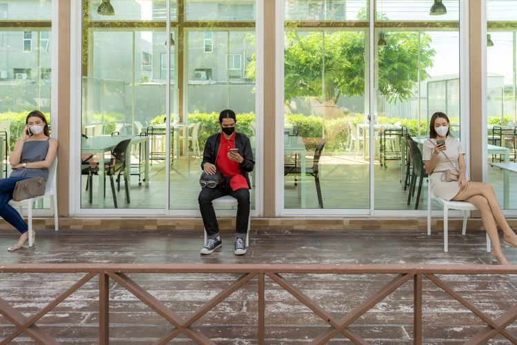

Hidup Saya Paling Bahagia di Indonesia
Saya Tahu bahwa Saya Tidak Tahu
Gombalisasi Globalisasi
Nostalgia Babak Belur Belajar Matematika
New Normal Versus Old Normal
Sejarah: Dongeng atau Kisah Nyata?

Jangan Bunuh Kreativitas

Memetik Hikmah di Balik Prahara Corona
Hoaks atau Bukan Hoaks
Mempelajari Masa Lalu Demi Masa Depan

Lockdown or Not Lockdown